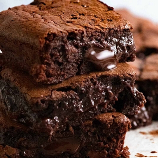

Chocolate Brownies

A simple classic, yet delicious chocolate brownie recipe.
In only 45 minutes you can be eating tasty gooey chocolate brownies.
With ingredients you have right in your kitchen,
you can make this chewy and gooey deliciousness we all love.
Ingredients
- 1/2 cup butter
- 1 cup white sugar
- 2 eggs
- 1 teaspoon vanilla extract
- 1/2 cup all-purpose flour
- 1/3 cup unsweetened cocoa powder
- 1/4 teaspoon salt
- 1/4 teaspoon baking powder
Steps
- Preheat the oven to 175 degrees celsius (350 degrees F}.
- Grease and flour an 8-inch square pan
- Melt 1/2 cup butter in a large saucepan. Remove from heat, and stir in sugar, eggs, and 1 teaspoon vanilla.
- Beat in 1/3 cup cocoa, flourc salt, and baking powder.
- Spread batter into prepared pan
- Bake in the preheated oven until top is dry and edges have started to pull away from the sides of the pan
- After about 25 to 30 minutes you should delicious brownies. Allow to cool before serving.